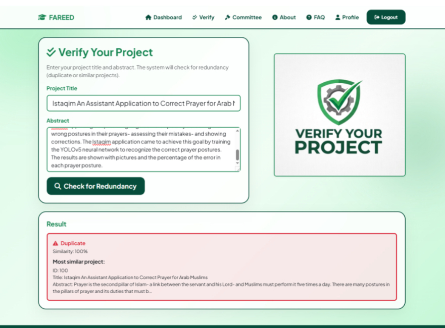

MISSION_02 //// FLAGSHIP
FAREED
– AI-BASED REDUNDANCY-FREE TITLE SELECTION
FAREED is a team-built AI web platform designed to help students, supervisors, and academic committees identify redundant graduation project titles before approval. It compares newly submitted titles and abstracts with archived projects and returns similarity scores, matched records, and a uniqueness or duplication decision.
◉ PROBLEM
Graduation committees often review large numbers of titles manually. Similar ideas can be phrased differently, delaying approval and reducing originality across student projects.
▣ SOLUTION
A web-based verification platform that checks proposed titles and abstracts against archived projects and returns ranked semantic matches with a clear decision status.
⌁ CORE FEATURES
- Student and supervisor authentication workflows.
- Archived graduation-project browsing.
- Title and abstract submission.
- Similarity percentage and closest matched project.
- Supervisor review, approval, and rejection dashboard.
◌ TECHNOLOGIES
◇ AI WORKFLOW
> INITIALIZING FAREED_NLP_ENGINE...
> loading archived project titles...
> preprocessing submitted title and abstract...
> generating TF-IDF vectors...
> calculating cosine similarity...
> example interface result: DUPLICATE // 100%
> matched project returned to student dashboard
Web interfaces for registration, login, project verification, archived projects, student dashboards, and supervisor review.
Validates requests, coordinates application logic, communicates with the AI module, and formats results for the interface.
Performs text normalization, TF-IDF vectorization, cosine similarity computation, ranking, and threshold-based classification.
Stores historical project titles, abstracts, user information, validation history, and records used by the comparison engine.
◇ WHAT THIS PROJECT DEMONSTRATES
FAREED_AI_26

STATUS: WORKING PROTOTYPE // TEAM GRADUATION PROJECT